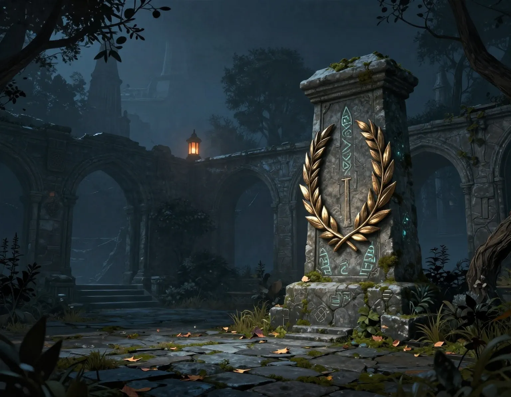
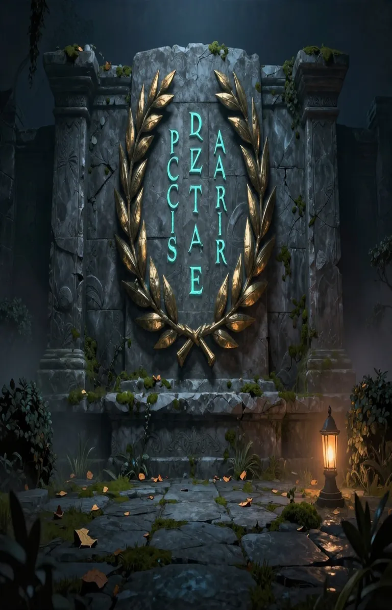
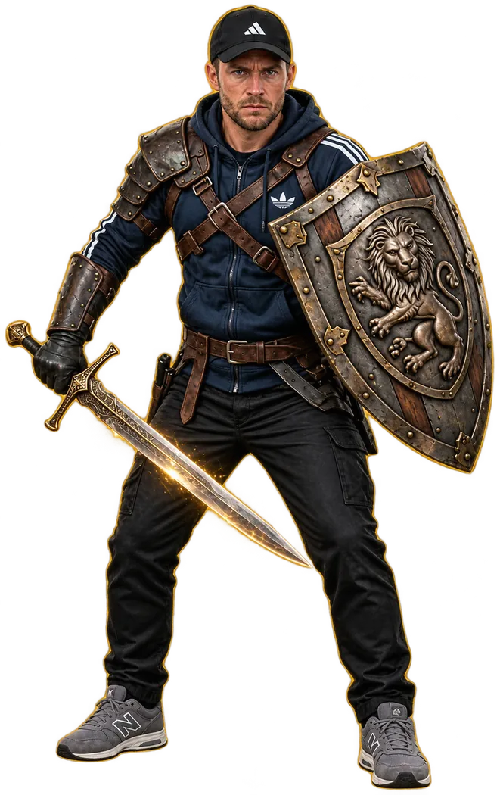
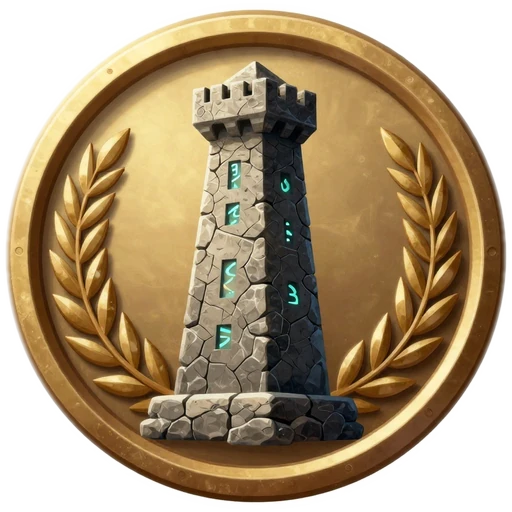

MENÜ




DIE ERINNERUNG BRAUCHT EINEN HÜTER
Deine Wacht.
Dein Vermächtnis.
Sieben historische Schauplätze. Eine Aufgabe: Bewahre die Erinnerung.
DEIN WEG DURCH DIE KAMPAGNE
KAMPAGNE
VERTEIDIGE BEREITS FREIGESCHALTETE KARTEN
ENDLOSMODUS
Helden & Ausrüstung
Optionen
Aus · Normale Freischaltungen und Spielstände bleiben erhalten.
Spielstand & Sicherung
Dein Fortschritt wird lokal auf diesem Gerät gespeichert. In der Rüstkammer kannst du deinen Spielstand exportieren oder importieren.
SO SPIELST DU Steuerung & Spielstand
WASD / Pfeiltasten bewegen · Dein Held greift automatisch an.
1–4 oder 6 Turm wählen · E bauen · Q aufwerten · X verkaufen.
Leertaste ausweichen · F Seelenruf · I Rucksack · H Heldenprofil.
Ab Level 2: Tempo zwischen 1× und 2× wechseln.
Bewege deinen Helden mit dem linken Steuerstick. Er greift automatisch an. Tippe auf einen freien Bauplatz, wähle einen Turm und bestätige den Bau. Ausweichen und Seelenruf findest du rechts. Ab Level 2 kannst du das Spieltempo auf 2× stellen.
Beute bleibt auch nach Niederlagen erhalten. Ausrüstung kannst du nur im Hauptmenü wechseln. Sichere deinen Spielstand regelmäßig über die Exportfunktion in der Rüstkammer. Beim Löschen der Browserdaten kann der lokale Fortschritt verloren gehen.
DIE RÜSTKAMMER
MARCEL · DEINE AUSRÜSTUNG
· Gegenstand antippen zum Vergleichen · Ausrüstung beider Helden
DEINE SCHMIEDE
Verbessere deine Ausrüstung bis Schmiedestufe III. Die Kosten siehst du vor jeder Aufwertung.
Rucksack aufräumen
Du kannst ungenutzte Gegenstände zerlegen, wenn sie weder angelegt noch als Favorit markiert sind. Die erhaltene Essenz wird vor deiner Bestätigung angezeigt.
Wähle einen Gegenstand im Rucksack, um seine Werte und mögliche Verbesserungen zu vergleichen.
MARCEL
Hier siehst du deine Kampfwerte. Um Ausrüstung zu wechseln, öffne im Hauptmenü die Rüstkammer.
DIE WELLE IST GEBROCHEN
WÄHLE EIN VERMÄCHTNIS
Drücke 1, 2 oder 3DIE WACHT ENDET
DAS MONUMENT IST GEFALLEN
oder R drückenEIN MOMENT DER RUHE
DIE WACHT RUHT
Deine Beute bleibt gespeichert. Der laufende Kampf bleibt erhalten, solange diese Seite geöffnet ist.
Esc oder P zum FortsetzenKAPITEL ABGESCHLOSSEN
DAS LABYRINTH IST OFFEN
Das nächste Kapitel ist freigeschaltet. Baue deine Verteidigung auf den markierten Plätzen entlang des Weges aus.
EINLEITUNG · 1 / 5